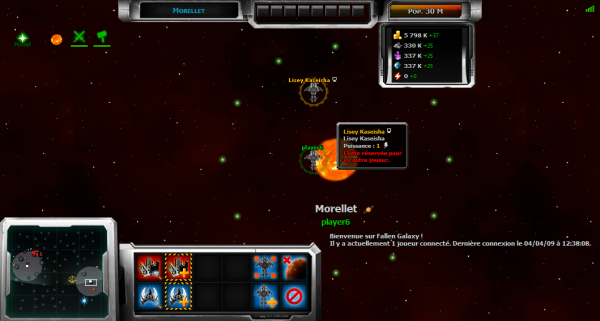

URL
http://media.fallengalaxy.eu/style/Soase
Description
Adaptation de l'interface du jeu Sins of a Solar Empire pour Fallen Galaxy.
Auteur
JayJay
Installation
Requiert un compte premium.
Dans Fallen Galaxy, cliquer sur Menu, puis Options. Dans les options graphiques, cliquer sur Thème et choisir Personnalisé.... Copier / coller l'adresse suivante : http://media.fallengalaxy.eu/style/Soase et valider.
Capture d'écran
